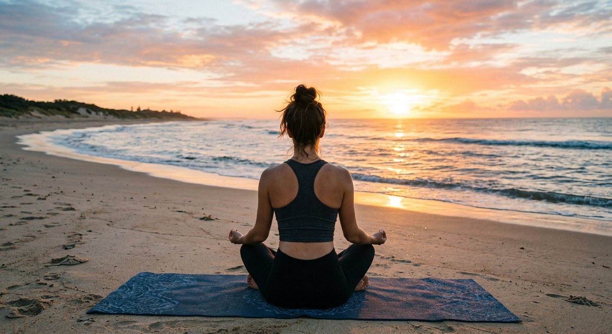

Soroi Blue Diani · Activities & Excursions
On Property & Nearby

Wellness
Yoga & Beach Wellness
Complimentary yoga mats are available for all guests. Practice on the beach, in the garden, or from your room at your own pace — the early mornings here, before the heat builds and the beach fills, are a remarkable time to be outside. Private guided sessions can be arranged on request through the hospitality desk.
Arrangements
Yoga mats complimentary — request from reception. Private guided sessions available on request.

Sport
Golf at Diani
Leisure Golf Club Diani offers a scenic 9-hole course with sweeping Indian Ocean views — a relaxed, beautiful game in a setting that is hard to match. Equipment hire is available on-site and the course is playable year-round. Ten minutes from Soroi Blue. A gentle morning round or a sunset game as the light softens over the water.
Arrangements
10 minutes from Soroi Blue. Equipment hire available at the club. Our concierge can arrange transport.